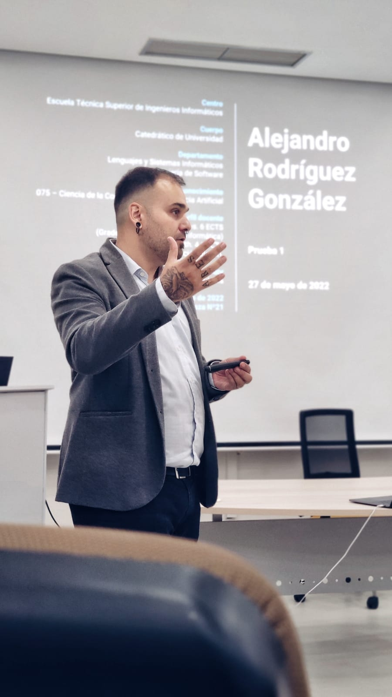

Keynote 1: Data-Driven Drug Repurposing Hypotheses Using Heterogeneous Types of Data: the DISNET Approach
Alejandro Rodríguez-González, Universidad Politécnica de Madrid, Spain
Abstract
Nowadays there are many sources and types of data available on the Internet. From textual sources to a semantic-enriched dataset, passing through data stored in relational databases or formats such as CSV, JSON, etc. In the biomedical domain, this information can be used in several data-driven approaches, but it is necessary for a complete process that allows the identification, extraction, and enrichment of the data to make it useful. DISNET is a project that was created to process heterogeneous sources of data in order to create a system able to integrate different types of biomedical information on a single platform to increase our current knowledge about diseases and, hence, to have a better understanding of how the diseases share components and behave. DISNET comprises a pipeline that goes from the crawling of non-structured (textual) information from different sources, passing through the application of NLP tools to extract useful disease-phenotype relationships and integrating this knowledge with other well-known sources of biomedical information from a biological and drug perspective, to create an enormous database of disease-related biomedical information and to create one of the largest sources of human disease networks data. As part of the results derived from the extraction and the analysis of the DISNET data, we have been able to have a real better understanding of the diseases, but also make use of the data to create a data-driven methodology for creating drug repurposing hypotheses, as well as, applying those analyses to study potential drugs to be used for COVID-19.
Bio

Alejandro Rodríguez-González, PhD, is Full Professor at the Department of Computer Languages and Systems and Software Engineering at Universidad Politécnica de Madrid. He has a degree in Computer Science, a M.Sc in Computer Science and technology in the specialty of Artificial Intelligence, a M.Sc in Engineering Decision systems and a PhD in Computer Science. He is the principal investigator of the Medical Data Analysis laboratory (MEDAL) at Center for Biomedical Technology. His main research interests include Artificial Intelligence and Biomedical informatics field, with interest on the creation of Medical Diagnosis Systems, medical knowledge representation and the extraction of knowledge from different sources (text, social media, etc.) and the understanding of diseases. In 2019 he was also the General Chair of 32nd IEEE CBMS International Symposium on Computer-Based Medical Systems (CBMS 2019). At this moment he is the Chair of the Steering Committee of CBMS conference. Prof. Rodríguez research experience includes the participation in more than 20 research and innovation projects at national (Spain) and international level (H2020/EIT Health) level. This participation includes being the principal investigator of two projects funded by the Spanish ministry of industry and two funded by H2020 programme. He is currently the coordinator of P4-LUCAT (Personalized medicine for lung cancer treatment: using Big Data-driven approaches for decision support) project, funded under ERA NET on Personalized Medicine JCT 2019 call. His main research line is the analysis of the data referred to diseases to try to have a better understanding of those diseases. In this context, his expertise is focused on the concept of the human disease networks, which are characterized by their constituent elements at the biological and phenotypical levels. With this information, and applying various types of analysis, we aim to have a better understanding of how diseases are related among them based on their shared features. One of the use cases of this understanding is drug repositioning, trying to find new uses to existing drugs. In January 2018 he was awarded with the “2017 Best Research Trajectory” from Universidad Politécnica de Madrid.